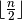
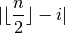
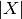

5.7. Customized search primitives: DecisionBuilders and Decisions
The search tree is traversed in a linear fashion: you go down left to assign values until it is no longer possible and you backtrack whenever necessary and go right[1]. This means that you cannot jump from one branch of the tree to another[2].
But what you can do however is define the tree thanks to combinations of DecisionBuilders and Decisions[3].
To compare our customized search primitives with the basic search strategy used until now (CHOOSE_FIRST_UNBOUND and ASSIGN_MIN_VALUE), we’ll gather some statistics. Then we’ll define two customized search strategies using two different mechanisms: in the first one, we’ll use callbacks and in the second one, we’ll define our own DecisionBuilder class. In neither cases we’ll use rocket science: the goal is to give you a taste of what you can do and how you can do it. Finally, we’ll say a few words about which search primitives to customize and why.
Warning
Some customizable search primitives are declared in the header constraint_solver/constraint_solveri.h (notice the i at the end).
Before we go on, let’s pause and take a second to discuss the inner mechanism used by the CP Solver to keep track of some objects.
5.7.1. BaseObject and RevAlloc
We have seen that most objects can be created with a factory method (the Make...() methods). This allows the CP solver to keep track of the created objects and delete them when they are no longer required. When backtracking, some objects are no longer needed and the CP Solver knows exactly when and what to delete. The BaseObject class is the root of all reversibly[5] allocated objects.
Whenever you define your own subclass of BaseObject (Decisions, DecisionBuilders and for instance the SymmetryBreakers we’ll see in the next section are BaseObjects), it is good practice to register the given object as being reversible to the solver. That is, the solver will take ownership of the object and delete it when it backtracks out of the current state. To register an object as reversible, you invoke the RevAlloc() method[6] of the solver. For instance, the Next() method of the BaseAssignVariables DecisionBuilder is implemented as follow:
Decision* BaseAssignVariables::Next(Solver* const s) {
int64 id = 0;
IntVar* const var = selector_->SelectVariable(s, &id);
if (nullptr != var) {
const int64 value = selector_->SelectValue(var, id);
switch (mode_) {
case ASSIGN:
return s->RevAlloc(new AssignOneVariableValue(var, value));
...
}
}
return nullptr;
}
RevAlloc() returns a pointer to the newly created and registered object, in this case the returned AssignOneVariableValue object. You can thus invoke this method with arguments in the constructor of the constructed object without having to keep a pointer to this object.
The solver will now take care of your object. If you have an array of objects that are subclasses of BaseObject, IntVar, IntExpr and Constraint, you can register your array with RevAllocArray(). This method is also valid for arrays of ints, int64, uint64 and bool. The array must have been allocated with the new[] operator.
If you take a look at the source code, you will see that the factories methods call RevAlloc() to pass ownership of their objects to the solver.
Note that if no variable can be selected, the Next() method returns a nullptr which is the way to tell the CP solver that this DecisionBuilder has done its job.
5.7.2. The basic search strategy visualized
Let’s have a look at our default strategy:
- We first choose the first unbound variable: CHOOSE_FIRST_UNBOUND.
- Then we assign it the smallest available value: ASSIGN_MIN_VALUE.
The complete search tree for  looks nice:
looks nice:

There are indeed two feasible solutions:
============================
size: 4
The Solve method took 0.001 seconds
Number of solutions: 2
Failures: 6
Branches: 10
Backtracks: 9
Stamps: 29
The complete search tree for  looks even better:
looks even better:

The solver seems to find the 10 feasible solutions quite quickly:
============================
size: 5
The Solve method took 0.07 seconds
Number of solutions: 10
Failures: 14
Branches: 26
Backtracks: 17
Stamps: 61
But then, and are really small numbers. And indeed, with  , things start to
look really ugly:
, things start to
look really ugly:

That’s a real nightmare! The statistics collected during the search confirm this:
============================
size: 6
The Solve method took 0.005 seconds
Number of solutions: 4
Failures: 36
Branches: 70
Backtracks: 39
Stamps: 149
To only find 4 solutions, we need 70 branches and 39 backtracks!
This trend is confirmed if we look at larger values of  :
:
|
7 | 8 | 9 | 10 | 11 | 12 |
|---|---|---|---|---|---|---|
| Time (s) | 0,014 | 0,052 | 0,25 | 0,899 | 4,236 | 21,773 |
| Number of sol. | 40 | 92 | 352 | 724 | 2680 | 14200 |
| Failures | 110 | 396 | 1546 | 6079 | 27246 | 131006 |
| Branches | 218 | 790 | 3090 | 12156 | 54490 | 262010 |
| Backtracks | 113 | 399 | 1549 | 6082 | 27249 | 131009 |
| Stamps | 445 | 1583 | 6189 | 24321 | 108989 | 524029 |
We clearly see the exponential pattern of intractable problems[4].
We have seen in the previous section that the other implemented search strategies didn’t seem to do better. Can we do better? Let’s try!
How did we produce these wonderful images?
All the images of search trees were produced with cpviz and nqueens4. See the section cpviz: how to visualize the search for more details on how to obtain them.
5.7.3. First try: start from the center (and use callbacks)
Our default search strategy (CHOOSE_FIRST_UNBOUND and ASSIGN_MIN_VALUE) starts with the variables from the left and then slowly assigns variables more in the center and finishes with
the variables at the other end, i.e. it will first try to assign some value to  , then
, then  , and so on until
, and so on until  for an -Queens Problem.
for an -Queens Problem.
When propagating the constraints from the side first, we don’t exclude as much values as when we propagate from the center. This is illustrated on the next figure:
In the left figure, the queen in the left upper corner forbids 9 variable-value combinations, while the queen on the right in the middle forbids 11 variable-value combinations.
Maybe it would be worth trying to first select the variables from the middle? To do so, let’s use a callback and define a simple way to evaluate the middleness of a variable index. We use a simple callback IndexEvaluator1 that allows to evaluate the next variable to branch on by giving the index of this variable in the std::vector<IntVar*> for unbounded variables:
typedef ResultCallback1<int64, int64> IndexEvaluator1;
As stated in Callbacks to the rescue, the smallest value returned by this callback will give the index of the chosen variable to branch on.
Define  to be the middle of a  chessboard. An easy way to measure the distance of the index
chessboard. An easy way to measure the distance of the index  of a variable to the middle of the chessboard is:
of a variable to the middle of the chessboard is:

where  denotes the absolute value of  , i.e. if or if .
Translated into code, we have the next callback:
, i.e. if or if .
Translated into code, we have the next callback:
class MiddleVariableIndexSelector : public IndexEvaluator1 {
public:
MiddleVariableIndexSelector(const int64 n): n_(n),
middle_var_index_((n-1)/2) {}
~MiddleVariableIndexSelector() {}
int64 Run(int64 index) {
return abs(middle_var_index_ - index);
}
private:
const int64 n_;
const int64 middle_var_index_;
};
To assign a value, we can use the predefined ASSIGN_CENTER_VALUE strategy that selects the first available value that is the closest to the center of the domain of the selected variable.
Our code becomes:
MiddleVariableIndexSelector * index_evaluator =
new MiddleVariableIndexSelector(size);
DecisionBuilder* const db = s.MakePhase(queens,
index_evaluator,
Solver::ASSIGN_CENTER_VALUE);
s.Solve(db, monitors); // go!
In the next table, we compare this strategy to our default strategy:
|
Statistics | Default strategy | New strategy |
|---|---|---|---|
| 7 | Failures | 110 | 98 |
| Branches | 218 | 194 | |
| 8 | Failures | 396 | 368 |
| Branches | 790 | 734 | |
| 9 | Failures | 1546 | 1272 |
| Branches | 3090 | 2542 | |
| 10 | Failures | 6079 | 4950 |
| Branches | 12156 | 9898 | |
| 11 | Failures | 27246 | 20441 |
| Branches | 54490 | 40880 | |
| 12 | Failures | 131006 | 97335 |
| Branches | 262010 | 194668 |
Our new strategy is better and - even if this is not shown - quicker. That said, is it really that clever? In the next table we compare our IndexEvaluator1 MiddleVariableIndexSelector combined with the ASSIGN_MIN_VALUE assign value strategy:
|
Statistics | New strategy | New strategy with ASSIGN_MIN_VALUE |
|---|---|---|---|
| 7 | Failures | 98 | 97 |
| Branches | 194 | 192 | |
| 8 | Failures | 368 | 363 |
| Branches | 734 | 724 | |
| 9 | Failures | 1272 | 1254 |
| Branches | 2542 | 2506 | |
| 10 | Failures | 4950 | 4857 |
| Branches | 9898 | 9712 | |
| 11 | Failures | 20441 | 20072 |
| Branches | 40880 | 40142 | |
| 12 | Failures | 97335 | 95396 |
| Branches | 194668 | 190784 |
How come that the value assigning strategy ASSIGN_MIN_VALUE does (slightly) better than the ASSIGN_CENTER_VALUE? At first, assigning the smallest eligible value doesn’t seem a good idea but you have to keep the big picture in mind: we are looking for all solutions. Despite the fact that looking from the center seems to accelerate the search when looking for one solution, it is counter-productive in some cases. Always test your ideas as the search is always a matter of tradeoffs.
Another thing that should bug you is that the IndexEvaluator1 is called on all unbounded variables for evaluation while we already know what the best unbounded variable is, no need to go over all of them. Maybe we can use a shortcut and why not use our knowledge to select the unbounded variables and assign them values? This is what we’ll try next.
5.7.4. Second try: dynamic variable selection (and define our own DecisionBuilder class)
In this sub-section, we will implement our own DecisionBuilder class. The idea is to give you a glimpse of what can be done, not to solve the -Queens Problem. The idea proposed here can be
further developed but this would lead us too far.
We continue with our first intuition to assign variables “from the center” as in our first try but this time we select the variables dynamically. We could have constructed our own customized Decision class but because we only assign one variable at a time, we can reuse the already implemented AssignVariableValue Decision class. As usual, this class is not directly available and we use the corresponding factory method MakeAssignVariableValue(). To mimic this implementation choice, we also use the anonymous namespace[7]:
namespace {
... // code here is inaccessible in another unit
}
and use a factory method for our customized DecisionBuilder class. This is just to show you why you cannot (and should not!) use some classes directly[8].
We name our customized DecisionBuilder NQueensDecisionBuilder:
class NQueensDecisionBuilder : public DecisionBuilder {
public:
NQueensDecisionBuilder(const int size,
const std::vector<IntVar*>& vars):
size_(size), vars_(vars), middle_var_index_((size-1)/2) {
CHECK_EQ(vars_.size(), size_);
}
~NQueensDecisionBuilder() {}
...
private:
const int size_;
const std::vector<IntVar*> vars_;
const int middle_var_index_;
};
and here is our factory method:
DecisionBuilder* MakeNQueensDecisionBuilder(Solver* const s,
const int size,
const std::vector<IntVar*>& vars) {
return s->RevAlloc(new NQueensDecisionBuilder(size, vars));
}
As you see, we construct a middle index for our variables in the constructor and assign this value to middle_var_index_ as we did in our first try.
We again use a two-stages approach: we first select a variable to branch on and then we select a value from its domain to assign it in the Apply() section of the search tree. Remember that this is exactly what a DecisionBuilder does: at each node in the search tree, it returns a Decision that is applied on one branch (Apply()) and refuted on the other branch (Refute()). We select the variable that has the smallest domain, i.e. the smallest number of values still available to assign to this variable. We could have chosen one of the CHOOSE_MIN_SIZE_XXX variable selection strategies except that in the case of a tie, we explicitly want to select the variable that is the “most in the middle”. To select this variable, we use the following method:
IntVar* SelectVar(Solver* const s) {
IntVar* selected_var = nullptr;
int64 id = -1;
int64 min_domain_size = kint64max;
// go left on the chessboard
for (int64 i = middle_var_index_; i >= 0; --i) {
IntVar* const var = vars_[i];
if (!var->Bound() && var->Size() < min_domain_size) {
selected_var = var;
id = i;
min_domain_size = var->Size();
}
}
// go right on the chessboard
for (int64 i = middle_var_index_ + 1; i < size_; ++i) {
IntVar* const var = vars_[i];
if (!var->Bound() && var->Size() < min_domain_size) {
selected_var = var;
id = i;
min_domain_size = var->Size();
}
}
if (id == -1) {
return nullptr;
} else {
return selected_var;
}
}
This method simply returns (a pointer to) the selected IntVar variable. Of interest are the methods Bound() that returns true if the variable is bounded, i.e. if it is assigned a value and Size() that returns the size of the current domain of a variable. If we can not find any variable, we return a nullptr. The idea behind this selection strategy is to choose a variable that can make the solver fail as soon as possible. Indeed, if a queen doesn’t have many possibilities, it’s probably because there is not enough room for her. This is strategy is called the first fail principle.
Once a variable is selected, we select a value to be assigned to it. Different scenarii are possible. Let’s try to select the row with the least compatible columns, i.e. the row that has the least number of possibilities to be occupied by a queen. The idea is that we want to choose the row that has the least possibilities to welcome a queen because this might lead to the best choice for a queen on her column. Indeed, other choices might even reduce the number of possibilities on this row. This strategy, the one that will most probably lead to a solution, is called the best success principle.
We devise a simple method to count the number of incompatibilities for one row:
int64 count_number_of_row_incompatibilities(int64 row) {
int64 count = 0;
for (int64 i = 0; i < size_; ++i) {
if (!vars_[i]->Contains(row)) {
++count;
}
}
return count;
}
Given a row row, we count the impossibilities, i.e. the number of queens that cannot be placed on this row. Note the use of the method Contains() that returns if a given value is in the domain or not. The corresponding SelectValue() method is straightforward and we don’t discuss it here. We now turn to the main method of the DecisionBuilder: its Next() method. It is deceivingly simple:
Decision* Next(Solver* const s) {
IntVar* const var = SelectVar(s);
if (nullptr != var) {
const int64 value = SelectValue(var);
return s->MakeAssignVariableValue(var, value);
}
return nullptr;
}
If we find a variable and a value, we return an AssignVariableValue Decision that will assign the value to the variable in its Apply() method and remove this value for this variable in its Refute() method.
How does this simple strategy perform? In the next table, we compare the number of failures and branches for our best first try strategy and this one:
|
Statistics | first try with ASSIGN_MIN_VALUE | Second try |
|---|---|---|---|
| 7 | Failures | 97 | 92 |
| Branches | 192 | 182 | |
| 8 | Failures | 363 | 328 |
| Branches | 724 | 654 | |
| 9 | Failures | 1254 | 1216 |
| Branches | 2506 | 2430 | |
| 10 | Failures | 4857 | 4500 |
| Branches | 9712 | 8998 | |
| 11 | Failures | 20072 | 17847 |
| Branches | 40142 | 35692 | |
| 12 | Failures | 95396 | 86102 |
| Branches | 190784 | 172202 |
So, yes, we did better by using some knowledge of the problem to prune the search tree but to really tackle this problem, we need a deeper understanding of... symmetries. This is the subject of the next section.
Don’t hesitate to have a look at the code. The routing library in particular has very specialized implementations of DecisionBuilders and Decisions. In particular, have a look at the different IntVarFilteredDecisionBuilders and you may want to implement your versions only if you add lots of knowledge of the problem at hand. Otherwise, you can reuse the already implemented (and more general and tested) versions.
5.7.5. How to customize search primitives?
Basically, think about an algorithm and implement whatever you need. To customize search primitives, you can, in order of complexity:
- combine existing ones;
- redefine callbacks;
- implement your own version of some search primitive classes;
- mix all of the above.
Often, there is more than one way to do it. Choose the simplest way first to prototype your algorithm. Combining existing chunks of code shouldn’t need too much coding effort and you will know right away if your idea has some potential or not. Being able to rapidly construct an algorithm in a few lines of code is one of the strength of the or-tools library. Once your idea is implemented, profile your code to see if you really need an improved version or not. Maybe the existing code is too general and you should adapt it to your specific problem with the help of callbacks. Again, profile your code. Last situation, maybe there isn’t any piece of code to do what you want. In this case, you’ll need to implement your own version. The library was conceived with reuse and extension in mind. If you find yourself stuck, maybe it is because you are not using/redefining the right search primitives? In the section What search primitives to customize?, we discuss what search primitives to customize.
If you think your piece of code might be general enough and could be used by others, ask on the mailing list if we are not interested in implementing it ourselves or if by any chance we don’t already have some code that we can open source.
Last but not least, if you have produced a piece of code of general interest, share it with the community.
Footnotes
| [1] | We keep our visualization of our binary search tree, with going left to assign some values to variables and going right to do the contrary, i.e. to avoid the assignment of these values to the same variables. Of course, there is no left nor right in the tree. The basic idea is to partition the sub-tree at this point in the search into two sub-trees. |
| [2] | Well, this is not totally exact. The search tree is conceptual and depending on the view you have of the tree, you can visit it in different ways but let us keep it simple for the moment. We have one search tree and the CP Solver use a pre-order traversal to traverse this tree. Reread the section Basic working of the solver: the search algorithm if needed. |
| [3] | And other primitives like SymmetryBreakers, subject of the section Breaking symmetries with SymmetryBreakers. |
| [4] | This is not a proof of course. Maybe another search strategy would yield a better algorithm but we do know that this problem is intractable. |
| [5] | This is in reference to the backtracking mechanism of the CP Solver. |
| [6] | Or one of its sibling methods. |
| [7] | Although anonymous namespaces are no longer required in C++11. |
| [8] | You can access the class definitions in the same file though. |
Google or-tools |
User's Manual
Google search
Welcome
Tutorial examples
Current chapter
5. Defining search primitives: the n-Queens Problem
Previous section
5.6. Out of the box variables and values selection primitives
Next section
5.8. Breaking symmetries with SymmetryBreakers